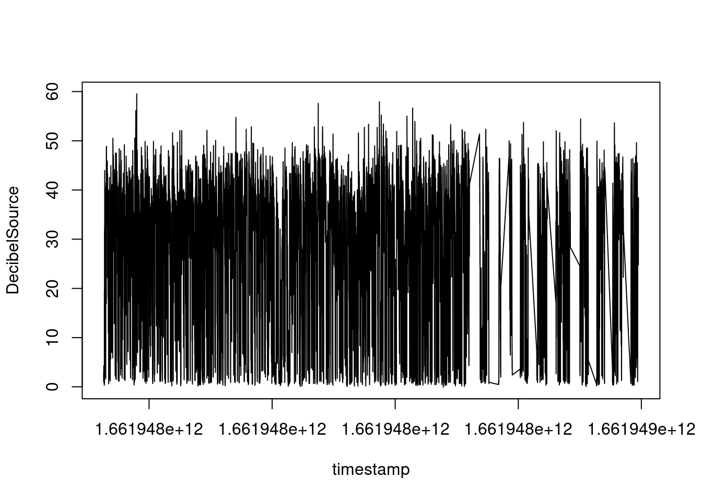
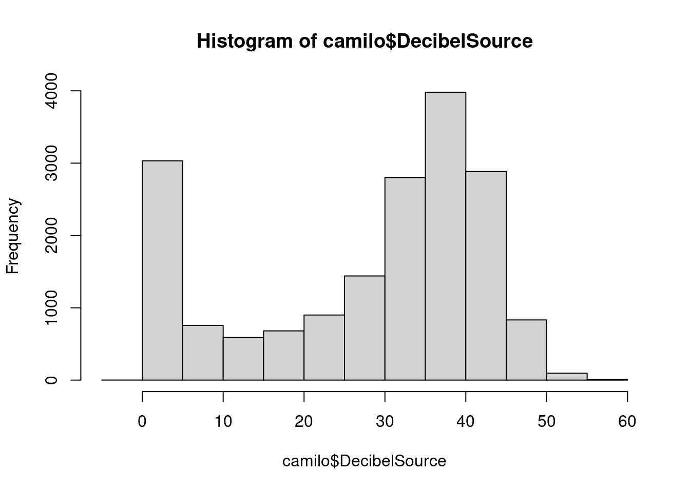
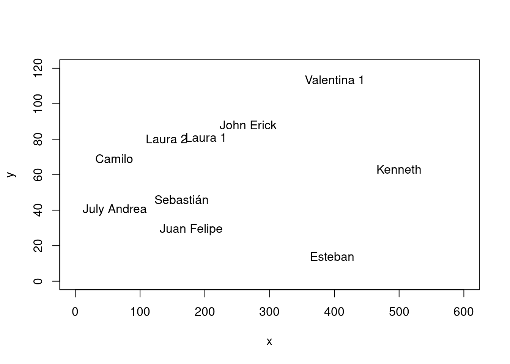
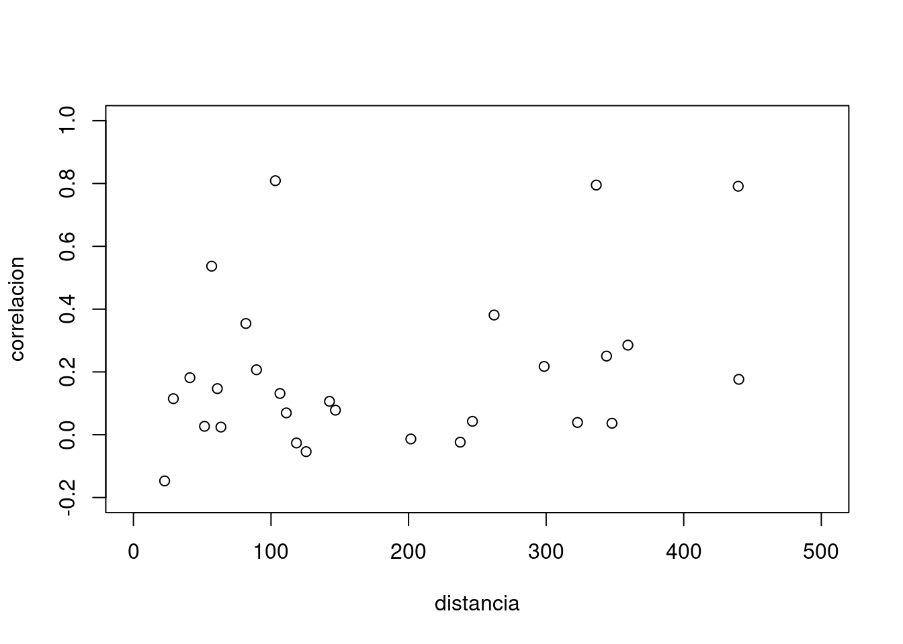

library(tidyverse)
library(reshape2)
library(tidyr)analisis_datos_experimentales_arduino
Cargamos los datos
camilo<-read.csv("camilo.csv")
jhon_erick<-read.csv("jhon_erick.csv")
juan_felipe<-read.csv("juan_felipe.csv")
july_andrea<-read.csv("july_andrea.csv")
kenneth<-read.csv("kenneth.csv")
laura_1<-read.csv("laura_1.csv")
laura_2<-read.csv("laura_2.csv")
sebastian<-read.csv("sebastian.csv")
valentina_1<-read.csv("Valentina_1.csv")
esteban<-read.csv2("esteban.csv")Exploramos uno de los datos
plot(camilo, type="l")
camilo$timestamp[nrow(camilo)][1] 1.661949e+12camilo$timestamp[nrow(camilo)] - camilo$timestamp[1][1] 869172(camilo$timestamp[nrow(camilo)]-camilo$timestamp[1])/60000[1] 14.4862Exploramos la distribución de los datos
hist(camilo$DecibelSource)
with(camilo, plot(timestamp, DecibelSource, type = "l"))Cargamos las coordenadas
coordenadas<-read.csv("coordenadas (2).csv")
names(coordenadas)[1] "Nombre" "x" "y" coordenadas$y<-as.numeric(gsub(",", ".", coordenadas$y))
coordenadas Nombre x y
1 Sebastián 164 46.0
2 Esteban 397 14.0
3 John Erick 267 88.0
4 July Andrea 61 40.0
5 Camilo 60 69.0
6 Kenneth 500 63.0
7 Laura 1 202 81.0
8 Laura 2 141 80.0
9 Juan Felipe 179 29.0
10 Valentina 1 401 113.5Graficamos las coordenadas
with(coordenadas, plot(x,y,
xlim = c(0,600),
ylim = c(0,120),
type = "n"))
with(coordenadas, text(x,y, labels = Nombre))
como la función dist dá media matriz, entonces generamos la matriz completa y la convertimos a dataframe. LO primero se hace con la librería “reshape2”.
distancias<-dist(coordenadas[,-1])
distancias<-melt(as.matrix(distancias), varnames = c("Name1", "Name2"))
distancias<-as.data.frame(distancias)
distancias Name1 Name2 value
1 1 1 0.00000
2 2 1 235.18716
3 3 1 111.23399
4 4 1 103.17461
5 5 1 106.51291
6 6 1 336.42978
7 7 1 51.66237
8 8 1 41.04875
9 9 1 22.67157
10 10 1 246.42494
11 1 2 235.18716
12 2 2 0.00000
13 3 2 149.58610
14 4 2 337.00445
15 5 2 341.45864
16 6 2 114.06139
17 7 2 206.18923
18 8 2 264.37095
19 9 2 218.51545
20 10 2 99.58037
21 1 3 111.23399
22 2 3 149.58610
23 3 3 0.00000
24 4 3 211.51832
25 5 3 207.87015
26 6 3 234.33736
27 7 3 65.37584
28 8 3 126.25371
29 9 3 105.94810
30 10 3 136.40473
31 1 4 103.17461
32 2 4 337.00445
33 3 4 211.51832
34 4 4 0.00000
35 5 4 29.01724
36 6 4 439.60209
37 7 4 146.84005
38 8 4 89.44272
39 9 4 118.51160
40 10 4 347.85378
41 1 5 106.51291
42 2 5 341.45864
43 3 5 207.87015
44 4 5 29.01724
45 5 5 0.00000
46 6 5 440.04091
47 7 5 142.50614
48 8 5 81.74350
49 9 5 125.54282
50 10 5 343.89133
51 1 6 336.42978
52 2 6 114.06139
53 3 6 234.33736
54 4 6 439.60209
55 5 6 440.04091
56 6 6 0.00000
57 7 6 298.54313
58 8 6 359.40228
59 9 6 322.79560
60 10 6 111.13618
61 1 7 51.66237
62 2 7 206.18923
63 3 7 65.37584
64 4 7 146.84005
65 5 7 142.50614
66 6 7 298.54313
67 7 7 0.00000
68 8 7 61.00820
69 9 7 56.85948
70 10 7 201.63643
71 1 8 41.04875
72 2 8 264.37095
73 3 8 126.25371
74 4 8 89.44272
75 5 8 81.74350
76 6 8 359.40228
77 7 8 61.00820
78 8 8 0.00000
79 9 8 63.60031
80 10 8 262.14929
81 1 9 22.67157
82 2 9 218.51545
83 3 9 105.94810
84 4 9 118.51160
85 5 9 125.54282
86 6 9 322.79560
87 7 9 56.85948
88 8 9 63.60031
89 9 9 0.00000
90 10 9 237.53789
91 1 10 246.42494
92 2 10 99.58037
93 3 10 136.40473
94 4 10 347.85378
95 5 10 343.89133
96 6 10 111.13618
97 7 10 201.63643
98 8 10 262.14929
99 9 10 237.53789
100 10 10 0.00000dado que se generó a partir de la matriz de distancias un data frame con combinaciones repetidas, entones mediante la función “unique” generamos una unica combinación de filas (argumento 1) de manera ordenada con el argumento “sort”. POsteriormente se renombran las columnas. Dado que en la combinación se incluyó el cero, tambien se eliminó generando un subset de datos.
distancias <- unique(t(apply(distancias, 1, sort)))
distancias [,1] [,2] [,3]
[1,] 0 1 1.00000
[2,] 1 2 235.18716
[3,] 1 3 111.23399
[4,] 1 4 103.17461
[5,] 1 5 106.51291
[6,] 1 6 336.42978
[7,] 1 7 51.66237
[8,] 1 8 41.04875
[9,] 1 9 22.67157
[10,] 1 10 246.42494
[11,] 0 2 2.00000
[12,] 2 3 149.58610
[13,] 2 4 337.00445
[14,] 2 5 341.45864
[15,] 2 6 114.06139
[16,] 2 7 206.18923
[17,] 2 8 264.37095
[18,] 2 9 218.51545
[19,] 2 10 99.58037
[20,] 0 3 3.00000
[21,] 3 4 211.51832
[22,] 3 5 207.87015
[23,] 3 6 234.33736
[24,] 3 7 65.37584
[25,] 3 8 126.25371
[26,] 3 9 105.94810
[27,] 3 10 136.40473
[28,] 0 4 4.00000
[29,] 4 5 29.01724
[30,] 4 6 439.60209
[31,] 4 7 146.84005
[32,] 4 8 89.44272
[33,] 4 9 118.51160
[34,] 4 10 347.85378
[35,] 0 5 5.00000
[36,] 5 6 440.04091
[37,] 5 7 142.50614
[38,] 5 8 81.74350
[39,] 5 9 125.54282
[40,] 5 10 343.89133
[41,] 0 6 6.00000
[42,] 6 7 298.54313
[43,] 6 8 359.40228
[44,] 6 9 322.79560
[45,] 6 10 111.13618
[46,] 0 7 7.00000
[47,] 7 8 61.00820
[48,] 7 9 56.85948
[49,] 7 10 201.63643
[50,] 0 8 8.00000
[51,] 8 9 63.60031
[52,] 8 10 262.14929
[53,] 0 9 9.00000
[54,] 9 10 237.53789
[55,] 0 10 10.00000distancias<-as.data.frame(distancias)
distancias V1 V2 V3
1 0 1 1.00000
2 1 2 235.18716
3 1 3 111.23399
4 1 4 103.17461
5 1 5 106.51291
6 1 6 336.42978
7 1 7 51.66237
8 1 8 41.04875
9 1 9 22.67157
10 1 10 246.42494
11 0 2 2.00000
12 2 3 149.58610
13 2 4 337.00445
14 2 5 341.45864
15 2 6 114.06139
16 2 7 206.18923
17 2 8 264.37095
18 2 9 218.51545
19 2 10 99.58037
20 0 3 3.00000
21 3 4 211.51832
22 3 5 207.87015
23 3 6 234.33736
24 3 7 65.37584
25 3 8 126.25371
26 3 9 105.94810
27 3 10 136.40473
28 0 4 4.00000
29 4 5 29.01724
30 4 6 439.60209
31 4 7 146.84005
32 4 8 89.44272
33 4 9 118.51160
34 4 10 347.85378
35 0 5 5.00000
36 5 6 440.04091
37 5 7 142.50614
38 5 8 81.74350
39 5 9 125.54282
40 5 10 343.89133
41 0 6 6.00000
42 6 7 298.54313
43 6 8 359.40228
44 6 9 322.79560
45 6 10 111.13618
46 0 7 7.00000
47 7 8 61.00820
48 7 9 56.85948
49 7 10 201.63643
50 0 8 8.00000
51 8 9 63.60031
52 8 10 262.14929
53 0 9 9.00000
54 9 10 237.53789
55 0 10 10.00000colnames(distancias)[2]="Name2"
colnames(distancias)[1]="Name1"
colnames(distancias)[3]="distancia"
distancias<-distancias[-1,]
##eliminamos los ceros generados
distancias<-subset(distancias, Name1!=0)
distancias Name1 Name2 distancia
2 1 2 235.18716
3 1 3 111.23399
4 1 4 103.17461
5 1 5 106.51291
6 1 6 336.42978
7 1 7 51.66237
8 1 8 41.04875
9 1 9 22.67157
10 1 10 246.42494
12 2 3 149.58610
13 2 4 337.00445
14 2 5 341.45864
15 2 6 114.06139
16 2 7 206.18923
17 2 8 264.37095
18 2 9 218.51545
19 2 10 99.58037
21 3 4 211.51832
22 3 5 207.87015
23 3 6 234.33736
24 3 7 65.37584
25 3 8 126.25371
26 3 9 105.94810
27 3 10 136.40473
29 4 5 29.01724
30 4 6 439.60209
31 4 7 146.84005
32 4 8 89.44272
33 4 9 118.51160
34 4 10 347.85378
36 5 6 440.04091
37 5 7 142.50614
38 5 8 81.74350
39 5 9 125.54282
40 5 10 343.89133
42 6 7 298.54313
43 6 8 359.40228
44 6 9 322.79560
45 6 10 111.13618
47 7 8 61.00820
48 7 9 56.85948
49 7 10 201.63643
51 8 9 63.60031
52 8 10 262.14929
54 9 10 237.53789Dado que en la generación de la matriz los items quedaron como número, entonces se convierte a caracter y se reasigna el nombre correspondiente a cada número, ya que cada número corresponde al item organizado dentro del dataframe.
distancias$Name1<-as.character(distancias$Name1)
distancias$Name2<-as.character(distancias$Name2)
distancias$Name1[distancias$Name1 =="1"]<-"sebastian"
distancias$Name1[distancias$Name1 =="2"]<-"Esteban"
distancias$Name1[distancias$Name1 =="3"]<-"Jhon_erick"
distancias$Name1[distancias$Name1 =="4"]<-"july_andrea"
distancias$Name1[distancias$Name1 =="5"]<-"camilo"
distancias$Name1[distancias$Name1 =="6"]<-"kenneth"
distancias$Name1[distancias$Name1 =="7"]<-"laura_1"
distancias$Name1[distancias$Name1 =="8"]<-"laura2"
distancias$Name1[distancias$Name1 =="9"]<-"juan_felipe"
distancias$Name1[distancias$Name1 =="10"]<-"valentina_1"
distancias$Name2[distancias$Name2 =="1"]<-"sebastian"
distancias$Name2[distancias$Name2 =="2"]<-"Esteban"
distancias$Name2[distancias$Name2 =="3"]<-"Jhon_erick"
distancias$Name2[distancias$Name2 =="4"]<-"july_andrea"
distancias$Name2[distancias$Name2 =="5"]<-"camilo"
distancias$Name2[distancias$Name2 =="6"]<-"kenneth"
distancias$Name2[distancias$Name2 =="7"]<-"laura_1"
distancias$Name2[distancias$Name2 =="8"]<-"laura2"
distancias$Name2[distancias$Name2 =="9"]<-"juan_felipe"
distancias$Name2[distancias$Name2 =="10"]<-"valentina_1"
distancias Name1 Name2 distancia
2 sebastian Esteban 235.18716
3 sebastian Jhon_erick 111.23399
4 sebastian july_andrea 103.17461
5 sebastian camilo 106.51291
6 sebastian kenneth 336.42978
7 sebastian laura_1 51.66237
8 sebastian laura2 41.04875
9 sebastian juan_felipe 22.67157
10 sebastian valentina_1 246.42494
12 Esteban Jhon_erick 149.58610
13 Esteban july_andrea 337.00445
14 Esteban camilo 341.45864
15 Esteban kenneth 114.06139
16 Esteban laura_1 206.18923
17 Esteban laura2 264.37095
18 Esteban juan_felipe 218.51545
19 Esteban valentina_1 99.58037
21 Jhon_erick july_andrea 211.51832
22 Jhon_erick camilo 207.87015
23 Jhon_erick kenneth 234.33736
24 Jhon_erick laura_1 65.37584
25 Jhon_erick laura2 126.25371
26 Jhon_erick juan_felipe 105.94810
27 Jhon_erick valentina_1 136.40473
29 july_andrea camilo 29.01724
30 july_andrea kenneth 439.60209
31 july_andrea laura_1 146.84005
32 july_andrea laura2 89.44272
33 july_andrea juan_felipe 118.51160
34 july_andrea valentina_1 347.85378
36 camilo kenneth 440.04091
37 camilo laura_1 142.50614
38 camilo laura2 81.74350
39 camilo juan_felipe 125.54282
40 camilo valentina_1 343.89133
42 kenneth laura_1 298.54313
43 kenneth laura2 359.40228
44 kenneth juan_felipe 322.79560
45 kenneth valentina_1 111.13618
47 laura_1 laura2 61.00820
48 laura_1 juan_felipe 56.85948
49 laura_1 valentina_1 201.63643
51 laura2 juan_felipe 63.60031
52 laura2 valentina_1 262.14929
54 juan_felipe valentina_1 237.53789Eliminamos las milesimas de segundos
camilo<-camilo %>%
mutate(timestamp1 = trunc(timestamp/1000))
jhon_erick<-jhon_erick %>%
mutate(timestamp1 = trunc(timestamp/1000))
juan_felipe<-juan_felipe %>%
mutate(timestamp1 = trunc(timestamp/1000))
july_andrea<-july_andrea%>%
mutate(timestamp1 =trunc(timestamp/1000))
kenneth<-kenneth %>%
mutate(timestamp1 = trunc(timestamp/1000))
laura_1<-laura_1 %>%
mutate(timestamp1 = trunc(timestamp/1000))
laura_2<-laura_2 %>%
mutate(timestamp1 = trunc(timestamp/1000))
sebastian<-sebastian %>%
mutate(timestamp1 = trunc(timestamp/1000))
valentina_1<-valentina_1 %>%
mutate(timestamp1 = trunc(timestamp/1000))
esteban<-esteban %>%
mutate(timestamp1 = trunc(timestamp/1000))length(unique(camilo$timestamp1))[1] 737generamos la columna de fecha en formato fecha y hora
camilo1<- camilo %>%
group_by(timestamp1) %>%
summarise(camilo = mean(DecibelSource, na.rm=TRUE))%>%
mutate(fecha=as.POSIXct(timestamp1, origin = "1970-01-01"))
jhon_erick1<-jhon_erick %>%
group_by(timestamp1) %>%
summarise(jhon_erick = mean(DecibelSource, na.rm = TRUE))%>%
mutate(fecha=as.POSIXct(timestamp1, origin = "1970-01-01"))
juan_felipe1<-juan_felipe %>%
group_by(timestamp1) %>%
summarise(juan_felipe = mean(DecibelSource, na.rm =TRUE))%>%
mutate(fecha=as.POSIXct(timestamp1, origin = "1970-01-01"))
july_andrea1<-july_andrea %>%
group_by(timestamp1) %>%
summarise(july_andrea = mean(DecibelSource, na.rm =TRUE))%>%
mutate(fecha=as.POSIXct(timestamp1, origin = "1970-01-01"))
kenneth1<-kenneth %>%
group_by(timestamp1) %>%
summarise(kenneth= mean(DecibelSource, na.rm =TRUE))%>%
mutate(fecha=as.POSIXct(timestamp1, origin = "1970-01-01"))
laura_11<-laura_1 %>%
group_by(timestamp1) %>%
summarise(laura_1= mean(DecibelSource, na.rm =TRUE))%>%
mutate(fecha=as.POSIXct(timestamp1, origin = "1970-01-01"))
laura22<-laura_2 %>%
group_by(timestamp1) %>%
summarise(laura2= mean(DecibelSource, na.rm =TRUE))%>%
mutate(fecha=as.POSIXct(timestamp1, origin = "1970-01-01"))
sebastian1<-sebastian %>%
group_by(timestamp1) %>%
summarise(sebastian= mean(DecibelSource, na.rm =TRUE))%>%
mutate(fecha=as.POSIXct(timestamp1, origin = "1970-01-01"))
valentina11<-valentina_1 %>%
group_by(timestamp1) %>%
summarise(valentina_1= mean(DecibelSource, na.rm =TRUE))%>%
mutate(fecha=as.POSIXct(timestamp1, origin = "1970-01-01"))
esteban1<-esteban %>%
group_by(timestamp1) %>%
summarise(esteban= mean(DecibelSource, na.rm =TRUE))%>%
mutate(fecha=as.POSIXct(timestamp1, origin = "1970-01-01")) Unificamos todas las bases de datos a partir de la fecha
total<-camilo1%>%
inner_join(valentina11)%>%
inner_join(kenneth1)%>%
inner_join(juan_felipe1)%>%
inner_join(sebastian1)%>%
inner_join(laura_11)%>%
inner_join(laura22)%>%
inner_join(july_andrea1)
total# A tibble: 551 × 10
timestamp1 camilo fecha valen…¹ kenneth juan_…² sebas…³ laura_1
<dbl> <dbl> <dttm> <dbl> <dbl> <dbl> <dbl> <dbl>
1 1661947755 22.6 2022-08-31 07:09:15 50.2 32.0 28.9 31.6 42.5
2 1661947756 22.1 2022-08-31 07:09:16 33.1 30.7 11.0 25.0 35.1
3 1661947757 30.8 2022-08-31 07:09:17 37.5 47.1 10.7 51.7 35.4
4 1661947758 37.6 2022-08-31 07:09:18 35.5 43.2 23.4 42.7 51.6
5 1661947759 31.3 2022-08-31 07:09:19 51.5 42.8 37.6 34.7 46.2
6 1661947760 28.8 2022-08-31 07:09:20 40.5 41.5 26.9 30.9 41.9
7 1661947761 24.3 2022-08-31 07:09:21 33.7 35.7 31.2 32.1 43.0
8 1661947762 31.1 2022-08-31 07:09:22 36.9 34.0 18.8 34.6 40.3
9 1661947763 32.7 2022-08-31 07:09:23 39.5 41.9 14.8 46.3 39.8
10 1661947764 37.8 2022-08-31 07:09:24 45.7 39.1 23.5 31.5 50.4
# … with 541 more rows, 2 more variables: laura2 <dbl>, july_andrea <dbl>, and
# abbreviated variable names ¹valentina_1, ²juan_felipe, ³sebastian
# ℹ Use `print(n = ...)` to see more rows, and `colnames()` to see all variable namestotal<-total[, c(1,3,2,4,5,6,7,8,9,10)]
total # A tibble: 551 × 10
timestamp1 fecha camilo valen…¹ kenneth juan_…² sebas…³ laura_1
<dbl> <dttm> <dbl> <dbl> <dbl> <dbl> <dbl> <dbl>
1 1661947755 2022-08-31 07:09:15 22.6 50.2 32.0 28.9 31.6 42.5
2 1661947756 2022-08-31 07:09:16 22.1 33.1 30.7 11.0 25.0 35.1
3 1661947757 2022-08-31 07:09:17 30.8 37.5 47.1 10.7 51.7 35.4
4 1661947758 2022-08-31 07:09:18 37.6 35.5 43.2 23.4 42.7 51.6
5 1661947759 2022-08-31 07:09:19 31.3 51.5 42.8 37.6 34.7 46.2
6 1661947760 2022-08-31 07:09:20 28.8 40.5 41.5 26.9 30.9 41.9
7 1661947761 2022-08-31 07:09:21 24.3 33.7 35.7 31.2 32.1 43.0
8 1661947762 2022-08-31 07:09:22 31.1 36.9 34.0 18.8 34.6 40.3
9 1661947763 2022-08-31 07:09:23 32.7 39.5 41.9 14.8 46.3 39.8
10 1661947764 2022-08-31 07:09:24 37.8 45.7 39.1 23.5 31.5 50.4
# … with 541 more rows, 2 more variables: laura2 <dbl>, july_andrea <dbl>, and
# abbreviated variable names ¹valentina_1, ²juan_felipe, ³sebastian
# ℹ Use `print(n = ...)` to see more rows, and `colnames()` to see all variable namescorrela<-cor(total[, 3:10])
correla camilo valentina_1 kenneth juan_felipe sebastian
camilo 1.00000000 0.25045969 0.17643779 -0.05381136 0.13138569
valentina_1 0.25045969 1.00000000 0.06956460 -0.02365206 0.04276912
kenneth 0.17643779 0.06956460 1.00000000 0.03909142 0.79508422
juan_felipe -0.05381136 -0.02365206 0.03909142 1.00000000 -0.14706071
sebastian 0.13138569 0.04276912 0.79508422 -0.14706071 1.00000000
laura_1 0.10639811 -0.01351914 0.21748105 0.53671323 0.02685449
laura2 0.35422445 0.38123098 0.28528940 0.02441829 0.18162917
july_andrea 0.11479718 0.03658782 0.79127668 -0.02616454 0.80891785
laura_1 laura2 july_andrea
camilo 0.10639811 0.35422445 0.11479718
valentina_1 -0.01351914 0.38123098 0.03658782
kenneth 0.21748105 0.28528940 0.79127668
juan_felipe 0.53671323 0.02441829 -0.02616454
sebastian 0.02685449 0.18162917 0.80891785
laura_1 1.00000000 0.14687957 0.07820671
laura2 0.14687957 1.00000000 0.20687115
july_andrea 0.07820671 0.20687115 1.00000000Al igual que la matriz de distancias, convertimos la matriz de correlación como matriz (por defecto la convirtió a dataframee)
correla<-melt(as.matrix(correla), varnames = c("Name1", "Name2"))
correla$Name1<-as.character(correla$Name1)
correla$Name2<-as.character(correla$Name2)
correla Name1 Name2 value
1 camilo camilo 1.00000000
2 valentina_1 camilo 0.25045969
3 kenneth camilo 0.17643779
4 juan_felipe camilo -0.05381136
5 sebastian camilo 0.13138569
6 laura_1 camilo 0.10639811
7 laura2 camilo 0.35422445
8 july_andrea camilo 0.11479718
9 camilo valentina_1 0.25045969
10 valentina_1 valentina_1 1.00000000
11 kenneth valentina_1 0.06956460
12 juan_felipe valentina_1 -0.02365206
13 sebastian valentina_1 0.04276912
14 laura_1 valentina_1 -0.01351914
15 laura2 valentina_1 0.38123098
16 july_andrea valentina_1 0.03658782
17 camilo kenneth 0.17643779
18 valentina_1 kenneth 0.06956460
19 kenneth kenneth 1.00000000
20 juan_felipe kenneth 0.03909142
21 sebastian kenneth 0.79508422
22 laura_1 kenneth 0.21748105
23 laura2 kenneth 0.28528940
24 july_andrea kenneth 0.79127668
25 camilo juan_felipe -0.05381136
26 valentina_1 juan_felipe -0.02365206
27 kenneth juan_felipe 0.03909142
28 juan_felipe juan_felipe 1.00000000
29 sebastian juan_felipe -0.14706071
30 laura_1 juan_felipe 0.53671323
31 laura2 juan_felipe 0.02441829
32 july_andrea juan_felipe -0.02616454
33 camilo sebastian 0.13138569
34 valentina_1 sebastian 0.04276912
35 kenneth sebastian 0.79508422
36 juan_felipe sebastian -0.14706071
37 sebastian sebastian 1.00000000
38 laura_1 sebastian 0.02685449
39 laura2 sebastian 0.18162917
40 july_andrea sebastian 0.80891785
41 camilo laura_1 0.10639811
42 valentina_1 laura_1 -0.01351914
43 kenneth laura_1 0.21748105
44 juan_felipe laura_1 0.53671323
45 sebastian laura_1 0.02685449
46 laura_1 laura_1 1.00000000
47 laura2 laura_1 0.14687957
48 july_andrea laura_1 0.07820671
49 camilo laura2 0.35422445
50 valentina_1 laura2 0.38123098
51 kenneth laura2 0.28528940
52 juan_felipe laura2 0.02441829
53 sebastian laura2 0.18162917
54 laura_1 laura2 0.14687957
55 laura2 laura2 1.00000000
56 july_andrea laura2 0.20687115
57 camilo july_andrea 0.11479718
58 valentina_1 july_andrea 0.03658782
59 kenneth july_andrea 0.79127668
60 juan_felipe july_andrea -0.02616454
61 sebastian july_andrea 0.80891785
62 laura_1 july_andrea 0.07820671
63 laura2 july_andrea 0.20687115
64 july_andrea july_andrea 1.00000000Unimos los nombres en la medida que índiquen la interacción entre si (cabe resaltar que quedan los items, es decir los nombres repetidos que más adelante se eliminarań cuando se únifiquen la matriz de distancias y de correlación)
correla<-correla%>%
unite('par_nombres', Name1:Name2, remove = FALSE)
correla par_nombres Name1 Name2 value
1 camilo_camilo camilo camilo 1.00000000
2 valentina_1_camilo valentina_1 camilo 0.25045969
3 kenneth_camilo kenneth camilo 0.17643779
4 juan_felipe_camilo juan_felipe camilo -0.05381136
5 sebastian_camilo sebastian camilo 0.13138569
6 laura_1_camilo laura_1 camilo 0.10639811
7 laura2_camilo laura2 camilo 0.35422445
8 july_andrea_camilo july_andrea camilo 0.11479718
9 camilo_valentina_1 camilo valentina_1 0.25045969
10 valentina_1_valentina_1 valentina_1 valentina_1 1.00000000
11 kenneth_valentina_1 kenneth valentina_1 0.06956460
12 juan_felipe_valentina_1 juan_felipe valentina_1 -0.02365206
13 sebastian_valentina_1 sebastian valentina_1 0.04276912
14 laura_1_valentina_1 laura_1 valentina_1 -0.01351914
15 laura2_valentina_1 laura2 valentina_1 0.38123098
16 july_andrea_valentina_1 july_andrea valentina_1 0.03658782
17 camilo_kenneth camilo kenneth 0.17643779
18 valentina_1_kenneth valentina_1 kenneth 0.06956460
19 kenneth_kenneth kenneth kenneth 1.00000000
20 juan_felipe_kenneth juan_felipe kenneth 0.03909142
21 sebastian_kenneth sebastian kenneth 0.79508422
22 laura_1_kenneth laura_1 kenneth 0.21748105
23 laura2_kenneth laura2 kenneth 0.28528940
24 july_andrea_kenneth july_andrea kenneth 0.79127668
25 camilo_juan_felipe camilo juan_felipe -0.05381136
26 valentina_1_juan_felipe valentina_1 juan_felipe -0.02365206
27 kenneth_juan_felipe kenneth juan_felipe 0.03909142
28 juan_felipe_juan_felipe juan_felipe juan_felipe 1.00000000
29 sebastian_juan_felipe sebastian juan_felipe -0.14706071
30 laura_1_juan_felipe laura_1 juan_felipe 0.53671323
31 laura2_juan_felipe laura2 juan_felipe 0.02441829
32 july_andrea_juan_felipe july_andrea juan_felipe -0.02616454
33 camilo_sebastian camilo sebastian 0.13138569
34 valentina_1_sebastian valentina_1 sebastian 0.04276912
35 kenneth_sebastian kenneth sebastian 0.79508422
36 juan_felipe_sebastian juan_felipe sebastian -0.14706071
37 sebastian_sebastian sebastian sebastian 1.00000000
38 laura_1_sebastian laura_1 sebastian 0.02685449
39 laura2_sebastian laura2 sebastian 0.18162917
40 july_andrea_sebastian july_andrea sebastian 0.80891785
41 camilo_laura_1 camilo laura_1 0.10639811
42 valentina_1_laura_1 valentina_1 laura_1 -0.01351914
43 kenneth_laura_1 kenneth laura_1 0.21748105
44 juan_felipe_laura_1 juan_felipe laura_1 0.53671323
45 sebastian_laura_1 sebastian laura_1 0.02685449
46 laura_1_laura_1 laura_1 laura_1 1.00000000
47 laura2_laura_1 laura2 laura_1 0.14687957
48 july_andrea_laura_1 july_andrea laura_1 0.07820671
49 camilo_laura2 camilo laura2 0.35422445
50 valentina_1_laura2 valentina_1 laura2 0.38123098
51 kenneth_laura2 kenneth laura2 0.28528940
52 juan_felipe_laura2 juan_felipe laura2 0.02441829
53 sebastian_laura2 sebastian laura2 0.18162917
54 laura_1_laura2 laura_1 laura2 0.14687957
55 laura2_laura2 laura2 laura2 1.00000000
56 july_andrea_laura2 july_andrea laura2 0.20687115
57 camilo_july_andrea camilo july_andrea 0.11479718
58 valentina_1_july_andrea valentina_1 july_andrea 0.03658782
59 kenneth_july_andrea kenneth july_andrea 0.79127668
60 juan_felipe_july_andrea juan_felipe july_andrea -0.02616454
61 sebastian_july_andrea sebastian july_andrea 0.80891785
62 laura_1_july_andrea laura_1 july_andrea 0.07820671
63 laura2_july_andrea laura2 july_andrea 0.20687115
64 july_andrea_july_andrea july_andrea july_andrea 1.00000000AL igual que en la matriz de correlación, unimos los nombres en la medida de la interacción entre si
distancias<-distancias%>%
unite('par_nombres', Name1:Name2, remove = FALSE)
distancias par_nombres Name1 Name2 distancia
2 sebastian_Esteban sebastian Esteban 235.18716
3 sebastian_Jhon_erick sebastian Jhon_erick 111.23399
4 sebastian_july_andrea sebastian july_andrea 103.17461
5 sebastian_camilo sebastian camilo 106.51291
6 sebastian_kenneth sebastian kenneth 336.42978
7 sebastian_laura_1 sebastian laura_1 51.66237
8 sebastian_laura2 sebastian laura2 41.04875
9 sebastian_juan_felipe sebastian juan_felipe 22.67157
10 sebastian_valentina_1 sebastian valentina_1 246.42494
12 Esteban_Jhon_erick Esteban Jhon_erick 149.58610
13 Esteban_july_andrea Esteban july_andrea 337.00445
14 Esteban_camilo Esteban camilo 341.45864
15 Esteban_kenneth Esteban kenneth 114.06139
16 Esteban_laura_1 Esteban laura_1 206.18923
17 Esteban_laura2 Esteban laura2 264.37095
18 Esteban_juan_felipe Esteban juan_felipe 218.51545
19 Esteban_valentina_1 Esteban valentina_1 99.58037
21 Jhon_erick_july_andrea Jhon_erick july_andrea 211.51832
22 Jhon_erick_camilo Jhon_erick camilo 207.87015
23 Jhon_erick_kenneth Jhon_erick kenneth 234.33736
24 Jhon_erick_laura_1 Jhon_erick laura_1 65.37584
25 Jhon_erick_laura2 Jhon_erick laura2 126.25371
26 Jhon_erick_juan_felipe Jhon_erick juan_felipe 105.94810
27 Jhon_erick_valentina_1 Jhon_erick valentina_1 136.40473
29 july_andrea_camilo july_andrea camilo 29.01724
30 july_andrea_kenneth july_andrea kenneth 439.60209
31 july_andrea_laura_1 july_andrea laura_1 146.84005
32 july_andrea_laura2 july_andrea laura2 89.44272
33 july_andrea_juan_felipe july_andrea juan_felipe 118.51160
34 july_andrea_valentina_1 july_andrea valentina_1 347.85378
36 camilo_kenneth camilo kenneth 440.04091
37 camilo_laura_1 camilo laura_1 142.50614
38 camilo_laura2 camilo laura2 81.74350
39 camilo_juan_felipe camilo juan_felipe 125.54282
40 camilo_valentina_1 camilo valentina_1 343.89133
42 kenneth_laura_1 kenneth laura_1 298.54313
43 kenneth_laura2 kenneth laura2 359.40228
44 kenneth_juan_felipe kenneth juan_felipe 322.79560
45 kenneth_valentina_1 kenneth valentina_1 111.13618
47 laura_1_laura2 laura_1 laura2 61.00820
48 laura_1_juan_felipe laura_1 juan_felipe 56.85948
49 laura_1_valentina_1 laura_1 valentina_1 201.63643
51 laura2_juan_felipe laura2 juan_felipe 63.60031
52 laura2_valentina_1 laura2 valentina_1 262.14929
54 juan_felipe_valentina_1 juan_felipe valentina_1 237.53789Unimos las matrices en función de unir los mismos nombres (los cuales son las interacciones entre si)
correla_distancias<-merge(x = distancias, y = correla, by = "par_nombres")
correla_distancias par_nombres Name1.x Name2.x distancia Name1.y
1 camilo_juan_felipe camilo juan_felipe 125.54282 camilo
2 camilo_kenneth camilo kenneth 440.04091 camilo
3 camilo_laura_1 camilo laura_1 142.50614 camilo
4 camilo_laura2 camilo laura2 81.74350 camilo
5 camilo_valentina_1 camilo valentina_1 343.89133 camilo
6 juan_felipe_valentina_1 juan_felipe valentina_1 237.53789 juan_felipe
7 july_andrea_camilo july_andrea camilo 29.01724 july_andrea
8 july_andrea_juan_felipe july_andrea juan_felipe 118.51160 july_andrea
9 july_andrea_kenneth july_andrea kenneth 439.60209 july_andrea
10 july_andrea_laura_1 july_andrea laura_1 146.84005 july_andrea
11 july_andrea_laura2 july_andrea laura2 89.44272 july_andrea
12 july_andrea_valentina_1 july_andrea valentina_1 347.85378 july_andrea
13 kenneth_juan_felipe kenneth juan_felipe 322.79560 kenneth
14 kenneth_laura_1 kenneth laura_1 298.54313 kenneth
15 kenneth_laura2 kenneth laura2 359.40228 kenneth
16 kenneth_valentina_1 kenneth valentina_1 111.13618 kenneth
17 laura_1_juan_felipe laura_1 juan_felipe 56.85948 laura_1
18 laura_1_laura2 laura_1 laura2 61.00820 laura_1
19 laura_1_valentina_1 laura_1 valentina_1 201.63643 laura_1
20 laura2_juan_felipe laura2 juan_felipe 63.60031 laura2
21 laura2_valentina_1 laura2 valentina_1 262.14929 laura2
22 sebastian_camilo sebastian camilo 106.51291 sebastian
23 sebastian_juan_felipe sebastian juan_felipe 22.67157 sebastian
24 sebastian_july_andrea sebastian july_andrea 103.17461 sebastian
25 sebastian_kenneth sebastian kenneth 336.42978 sebastian
26 sebastian_laura_1 sebastian laura_1 51.66237 sebastian
27 sebastian_laura2 sebastian laura2 41.04875 sebastian
28 sebastian_valentina_1 sebastian valentina_1 246.42494 sebastian
Name2.y value
1 juan_felipe -0.05381136
2 kenneth 0.17643779
3 laura_1 0.10639811
4 laura2 0.35422445
5 valentina_1 0.25045969
6 valentina_1 -0.02365206
7 camilo 0.11479718
8 juan_felipe -0.02616454
9 kenneth 0.79127668
10 laura_1 0.07820671
11 laura2 0.20687115
12 valentina_1 0.03658782
13 juan_felipe 0.03909142
14 laura_1 0.21748105
15 laura2 0.28528940
16 valentina_1 0.06956460
17 juan_felipe 0.53671323
18 laura2 0.14687957
19 valentina_1 -0.01351914
20 juan_felipe 0.02441829
21 valentina_1 0.38123098
22 camilo 0.13138569
23 juan_felipe -0.14706071
24 july_andrea 0.80891785
25 kenneth 0.79508422
26 laura_1 0.02685449
27 laura2 0.18162917
28 valentina_1 0.04276912ELiminamos las columnas de más que se generaron en la unión (merge)
correla_distancias<-correla_distancias[, -c(2,3,5,6)]
correla_distancias par_nombres distancia value
1 camilo_juan_felipe 125.54282 -0.05381136
2 camilo_kenneth 440.04091 0.17643779
3 camilo_laura_1 142.50614 0.10639811
4 camilo_laura2 81.74350 0.35422445
5 camilo_valentina_1 343.89133 0.25045969
6 juan_felipe_valentina_1 237.53789 -0.02365206
7 july_andrea_camilo 29.01724 0.11479718
8 july_andrea_juan_felipe 118.51160 -0.02616454
9 july_andrea_kenneth 439.60209 0.79127668
10 july_andrea_laura_1 146.84005 0.07820671
11 july_andrea_laura2 89.44272 0.20687115
12 july_andrea_valentina_1 347.85378 0.03658782
13 kenneth_juan_felipe 322.79560 0.03909142
14 kenneth_laura_1 298.54313 0.21748105
15 kenneth_laura2 359.40228 0.28528940
16 kenneth_valentina_1 111.13618 0.06956460
17 laura_1_juan_felipe 56.85948 0.53671323
18 laura_1_laura2 61.00820 0.14687957
19 laura_1_valentina_1 201.63643 -0.01351914
20 laura2_juan_felipe 63.60031 0.02441829
21 laura2_valentina_1 262.14929 0.38123098
22 sebastian_camilo 106.51291 0.13138569
23 sebastian_juan_felipe 22.67157 -0.14706071
24 sebastian_july_andrea 103.17461 0.80891785
25 sebastian_kenneth 336.42978 0.79508422
26 sebastian_laura_1 51.66237 0.02685449
27 sebastian_laura2 41.04875 0.18162917
28 sebastian_valentina_1 246.42494 0.04276912colnames(correla_distancias)[2]="distancia"
colnames(correla_distancias)[3]="correlacion"
correla_distancias$distancia<-as.numeric(correla_distancias$distancia)
correla_distancias$correlacion<-as.numeric(correla_distancias$correlacion)Finalmente graficamos. De acuerdo con lo observado, se aprecia una tendencia exponencial negativa. Sin embargo, puede apreciarse que se evidencian datos atipicos. Lo anterior se explica en función de que no habría una unica fuente de sonido (la voz del profesor), si no que a su vez habían ruidos externos que afectaron el experimento (dado que el interes eran los niveles de sonido de una unica fuente y su cambio con la distancia).
with(correla_distancias, plot(distancia,correlacion,
xlim = c(-0.1,500),
ylim = c(-0.2,1)))